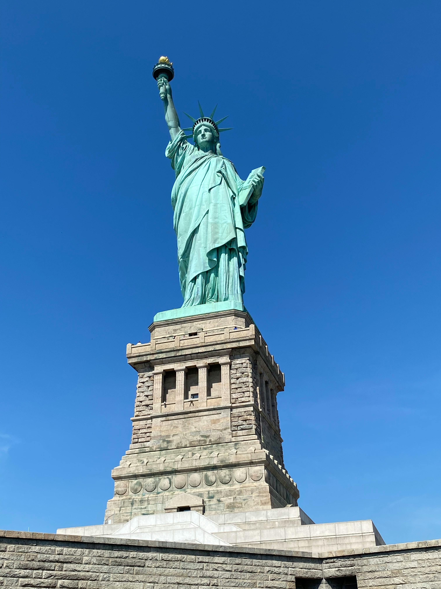

Para os amantes de História
Descubra 3 destinos imperdíveis para vistar em New York

- Estátua da Liberdade
A Estátua da Liberdade, oficialmente chamada de "A Liberdade Iluminando o Mundo", é uma colossal escultura neoclássica localizada na Ilha da Liberdade, no porto de Nova York. Presente da França aos Estados Unidos em comemoração ao centenário da Declaração de Independência americana, ela foi inaugurada em 1886 e rapidamente se tornou um símbolo icônico de liberdade, esperança e democracia.

- Central Park
Central Park é um oásis urbano icônico situado no coração de Manhattan, Nova York. Este vasto parque de 341 hectares oferece um refúgio da agitação da cidade, com paisagens pitorescas, extensos gramados, lagos serenos e trilhas sinuosas. Projetado por Frederick Law Olmsted e Calvert Vaux, o parque foi inaugurado em 1858 e desde então se tornou um destino amado por moradores e turistas. Seja para um passeio de carruagem, um piquenique relaxante, uma caminhada revigorante ou simplesmente para apreciar a natureza, o Central Park oferece uma experiência única e essencialmente nova-iorquina.

- Times Square
Times Square é um vibrante e icônico cruzamento comercial e centro de entretenimento localizado no coração de Manhattan, Nova York. Conhecida por seus painéis luminosos de LED e outdoors gigantes que brilham dia e noite, ela pulsa com uma energia constante e atrai milhões de visitantes anualmente. Com sua atmosfera eletrizante e sua presença constante na cultura popular, Times Square personifica a agitação e o brilho da cidade de Nova York, tornando-se uma parada obrigatória para quem a visita.
Nova York sempre está no ranking top 10 de cidades mais visitadas todos os anos. A infinidade de coisas que ela oferece , cativa cada pessoa que a visita. Ela oferecerá a você experiências únicas, que vão marcar a sua vida para sempre!